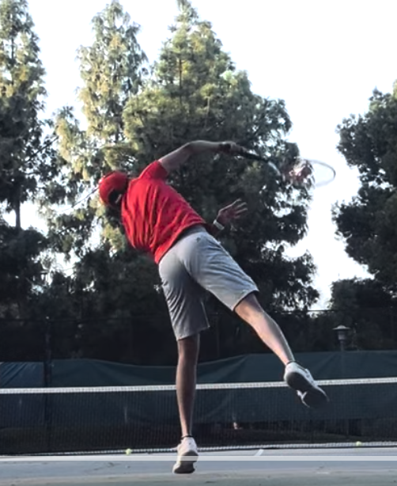

Tennis
A student of the game
I enjoy the discipline, problem-solving, and constant adaptation that tennis demands.
Outside work
Things that keep me learning, competing, and paying attention beyond the screen.
Tennis
I enjoy the discipline, problem-solving, and constant adaptation that tennis demands.

Travel
Exploring new landscapes and cultures is a reliable way to reset my point of view.

Practice
Whether it is a difficult chord progression, a serve, or a technical problem, progress is earned through repetition.